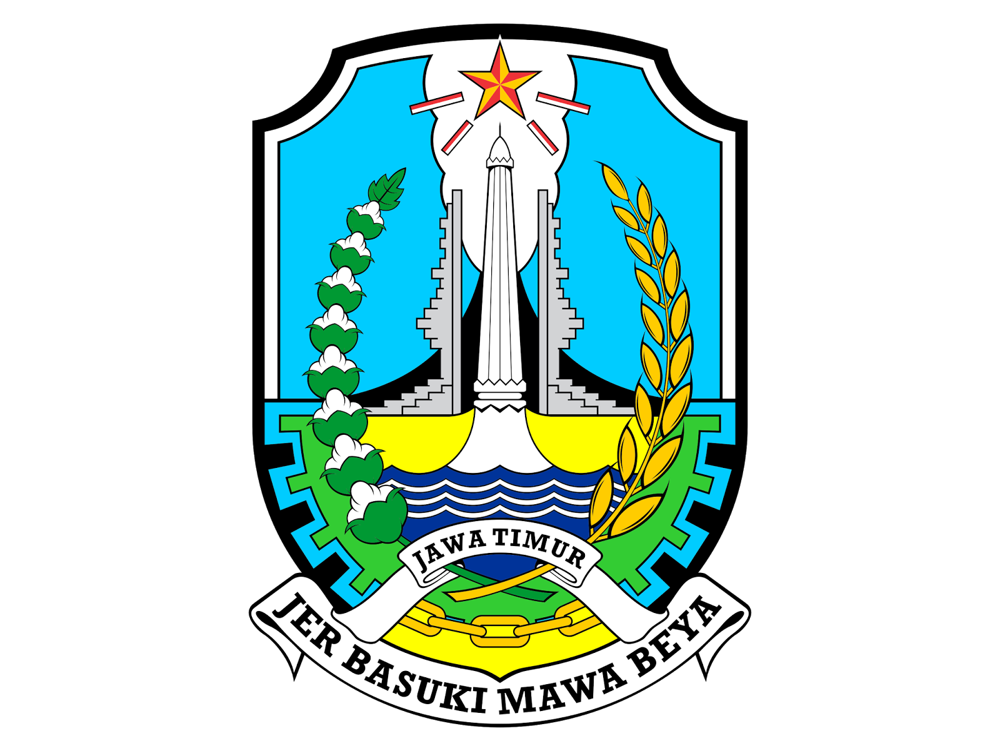

Pengalaman Kerja
Pegawai Onsite
2016 - 2017
PT. Dasaplast Nusantara
Menjabat sebagai Programmer dan bertugas membuat sistem informasi manufaktur untuk flexible packaging

2017 - sekarang
Dinas Komunikasi dan Informatika Prov Jatim
Pegawai Honorer (PTT), dengan jabatan pengelola sistem informasi tupoksi merancang, membangun sistem pemerintahan berupa web atau service API, monitoring Server dan Penanganan Insiden Keamanan Sistem
Pegawai Sambilan / Remote
2014 - 2017
Softwarehouse K-Soft
Softwarehouse milik teman dan bekerja sebagai programmer dengan tujuan sebagai second job atau kerjaan sambilan, beberapa project yang dikerjakan adalah inisiatormuda.org, corpuskwary.net, ppkk.unair.ac.id
Pegawai Lepas
2015
PT. Telkom Akses
Menjadi tim surveyor lapangan dengan mendata jumlah tiang Fiber Optic di Surabaya pekerjaan dikontrak selama 1 bulan saat liburan semester kuliah